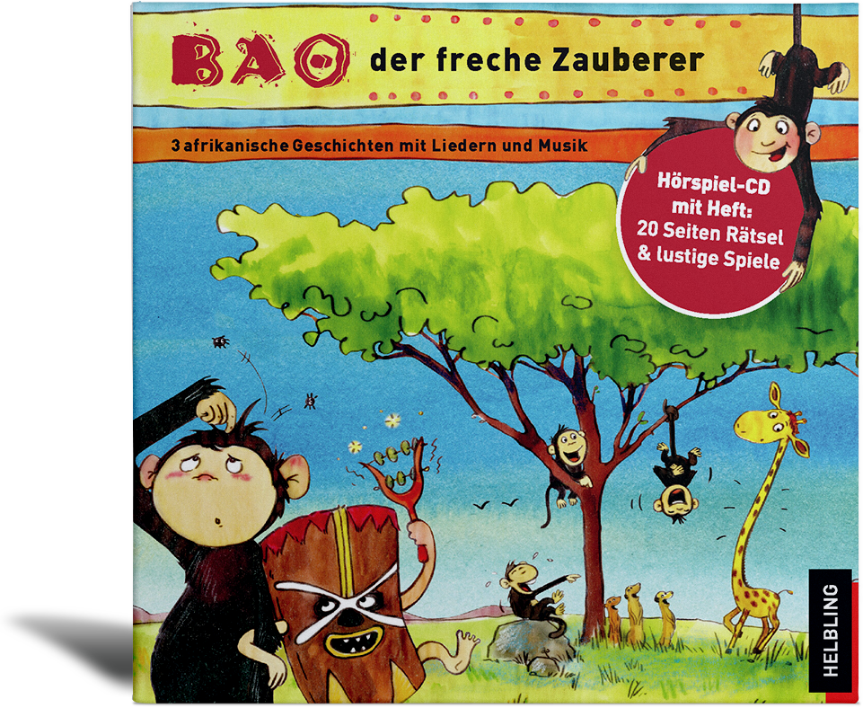

|

|
Gelesen von Peter Faerber
Nach mündlichen Überlieferungen aufgeschrieben und arrangiert von Almut Kirmse und Markus Detterbeck
Gefallen Euch die beiden Hörgeschichten?
Diese und eine weitere Musik-Hörgeschichte gibt es auch auf CD.
Jetzt bestellen auf www.helblingmusik4kids.de!
Die musikalischen Mitmach-Geschichten aus Afrika, die in der Tradition der mündlichen Überlieferungspraxis von Generation zu Generation weitergegeben werden, sind eine wunderschöne Alternative zu unseren mitteleuropäischen Märchen. Spannende Erlebnisse und magische Abenteuer von Kindern und Tieren laden zum Miterleben, zur Identifikation und zum Nachspielen ein.